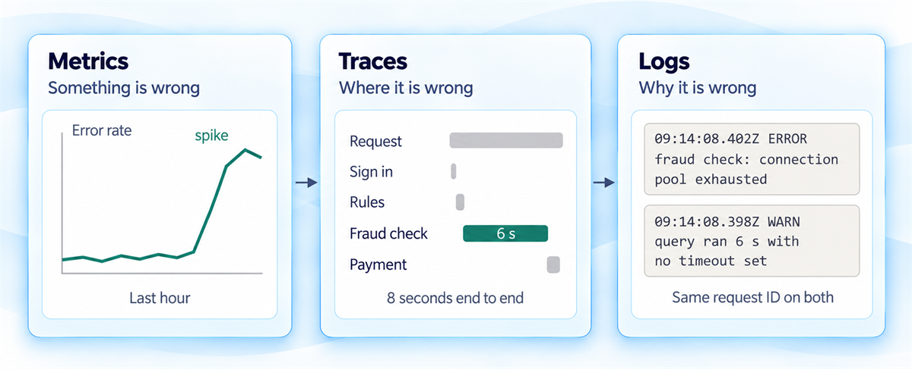
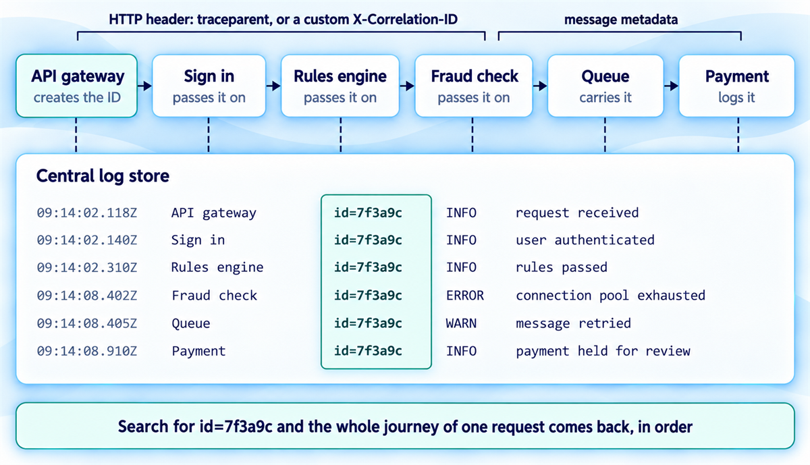
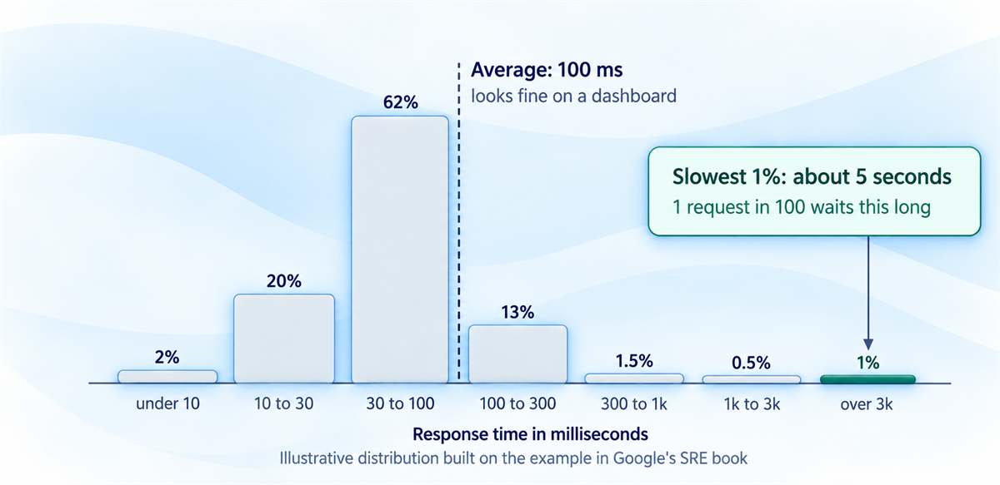
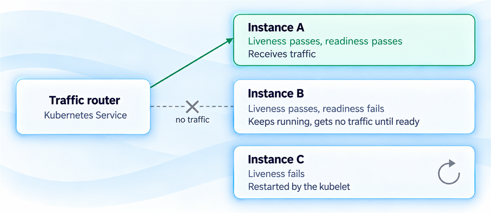
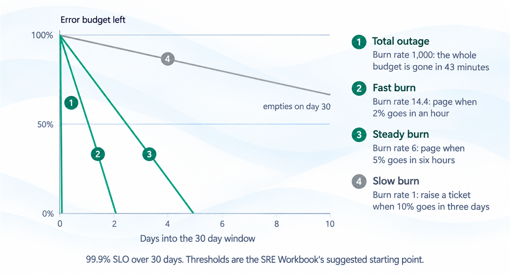

Observability and monitoring architecture
A service you cannot see into is a service you cannot run well. How fast you find the 3am fault depends on decisions made in alpha.
You'll come away with:
- How logs, metrics and traces split the work of finding a fault
- What to build in from alpha: correlation IDs, a logging standard, the right metrics and honest health checks
- How to alert on service level objectives so that a page means something
- What the Service Standard, Secure by Design and GovAssure expect, and how one set of data serves every audience
A service you cannot see into is a service you cannot run well. When it breaks at 3am, someone has to work out what happened, why, and who is affected, and how long that takes depends largely on design decisions made months earlier.
Observability is a design decision
Something will go wrong in production, and you will need to know what happened, why, and what it did to users. In my experience, without structured observability incident response becomes guesswork: engineers scroll through logs hoping something jumps out, and the same failure comes back because nobody spotted the pattern.
Government guidance expects better. Point 14 of the Service Standard says teams should have appropriate monitoring with a proportionate, sustainable plan to respond to the problems it finds. They should also monitor outcomes for users and ethical issues such as bias, as well as technical faults. GDS announced in July 2026 that it is reworking the Service Standard, so check the current version before relying on the point numbers used here. The Service Manual's guide to monitoring the status of your service is firmer: you must have monitoring in place by public beta, and should start planning it in alpha. For departments and arm's length bodies, the mandatory Secure by Design principles add detect and respond security: security logging, monitoring, alerting and response capabilities that must be continually tested and iterated.
So observability is an architecture decision. Correlation IDs, log structure, metrics and trace propagation decide whether the engineer on call at 3am finds the fault in minutes or spends the night looking.
The 3am investigation can only use what somebody decided to record, and the time to decide is alpha.
Logs, metrics and traces
Observability rests on three kinds of data. Logs are timestamped records of single events: a user signed in, a payment went through, an error was thrown. Structured as JSON with consistent fields, they can be queried, filtered and joined across services. Free text can only be searched and squinted at.
Metrics are numbers over time, such as request rate, error rate, latency distribution, queue depth and resource utilisation. Tom Wilkie's RED method gives each service its rate, errors and duration. Brendan Gregg's USE method checks each resource underneath, such as CPU, memory and connection pools, for utilisation, saturation and errors.
Traces follow one request through every service it touches, timing each step. Say a grant application passes through an API gateway, sign in, a rules engine, a fraud check and payment, and takes 8 seconds instead of 2. Metrics show the slowdown. A trace shows which of the five caused it.
Together they narrow the search. Metrics say something is wrong: the error rate has jumped. Traces say where: the fraud check is timing out. Logs say why: its database connection pool is exhausted by a query running with no timeout.

"We've got logging, so we've got observability."
Logs answer why, once you know where to look. Without metrics, users often tell you about the problem first. Without traces, you open five services' logs and guess. Without a shared request ID, those logs are hard to join up reliably.
Building it in from alpha
Observability bolted on late tends to show its gaps at the worst possible moment: log formats that differ by team, request IDs that stop at the first service. The Service Manual says teams should agree in alpha what to monitor and how, and should write monitoring checks alongside the code, treating them as tests for the live system.
Start with correlation IDs. The API gateway gives every incoming request a unique identifier, such as a UUID (universally unique identifier), and every component passes it on. Services forward it in an HTTP header, either a custom X-Correlation-ID or the traceparent header from W3C Trace Context, a W3C Recommendation that gives tracing tools a common format. Message queues carry it in message metadata. Every log line records it, so during an incident one search returns the request's whole route.

Keep personal data out of it. The Trace Context specification says its fields must not be used for personally identifiable or otherwise sensitive information.
Then set one logging standard at architecture level, instead of letting each team invent its own. Agree:
- JSON as the format
- the required fields: an ISO 8601 timestamp, correlation ID, service name and version, severity and message
- what each severity level means, so ERROR carries the same weight in every service
- what never goes in a log, starting with personal data, tokens and credentials, with redaction built into the shared logging library
Secure by Design's guidance on managing observability adds the security side: decide what to capture at the design stage, encrypt logs, restrict who can view, change or delete them, store them apart from the systems that produce them and set retention to fit regulatory needs.
What to measure, and how to read it
Start from the four golden signals in Google's Site Reliability Engineering (SRE) book: latency, traffic, errors and saturation. If you can measure only four metrics of a user facing system, the book says, measure these. Instrument them at every service boundary.
Record latency as a distribution, never only as an average. The SRE book's example: a service averaging 100 milliseconds at 1,000 requests a second can easily have 1% of requests taking 5 seconds. Count requests into latency buckets to build a histogram, and read the 50th, 95th and 99th percentiles (p50, p95 and p99). The average hides the users having the worst time.

Give each service two separate health checks. Liveness asks whether the process is still working. Readiness asks whether it can take traffic now, for example whether it has finished starting and can reach what it needs. In Kubernetes, a container that fails its liveness probe is restarted, and a Pod that fails its readiness probe is marked unready and gets no traffic from services.
Keep liveness checks cheap and local. The Kubernetes documentation warns that incorrectly implemented liveness probes can lead to cascading failures. Point one at a slow shared database and every instance can fail together, restart together and hammer a database that was already struggling.

Alerts worth waking someone for
The SRE book describes what happens when pages come too often: engineers second guess, skim or ignore them, and a real one gets lost in the noise.
Service level objectives (SLOs) give alerting a principled basis. Write them from the user's side. CPU below 80% is a resource metric; "citizens can submit an application within 3 seconds, 99.5% of the time" is an SLO. The Service Manual says you must track user related metrics, such as the percentage of users who can complete a task, as well as technical and security ones. Consider objectives for availability, latency, correctness and data freshness.
Whatever the SLO leaves over is the error budget. At 99.9% over 30 days, that is 0.1% of requests, or about 43 minutes of complete outage. How fast you spend it is the burn rate: at 1 the budget lasts exactly the 30 days, and a total outage burns at 1,000. Alert on burn rate, never on individual errors. Google's SRE Workbook suggests starting, for a 99.9% SLO, by paging when 2% of the budget goes in an hour or 5% in six hours, and raising a ticket when 10% goes in three days. Each alert also checks a short window, a twelfth as long, so it stops firing soon after the problem does.

Every page should lead to an action; if the person paged would not know what to do, delete the alert. The Service Manual adds that alert messages should make sense to someone just woken up, and that a call out for an issue that does not affect users and could have waited until morning is a reason to rethink the alert. Link every alert to a runbook. And if the programme board was told 99.9% availability, alert while that target is at risk, before the monthly report shows it was missed.
An alert nobody acts on is teaching the team to ignore the next one.
One set of data, four audiences
Different people need different views of the same data, and one dashboard built for everyone serves nobody in particular.
The operations team needs to know whether anything is broken now: error rates, degraded dependencies and firing alerts, on dashboards that refresh every few seconds and read at a glance. Service owners need trends: SLO compliance, error budget left, how response times moved over the month and where reliability work should go next. That view updates daily and belongs in sprint reviews and service assessments. Programme boards need red, amber or green status, SLO compliance as a percentage and an arrow for the trend.
![One set of instrumentation, logs, metrics and traces carrying the same request IDs, sits at the centre and feeds four views. The operations team asks whether anything is broken right now, on a dashboard that refreshes every few seconds. The service owner asks whether SLOs are being met, using error budget and monthly trends. The programme board asks whether the service is reliable enough and what the risks are, shown as red, amber or green with a trend arrow. The public sees the mandatory KPIs on data.gov.uk and a status page during incidents.](images/lesson26-image6.png)
Then there is the public. Point 10 of the Service Standard covers publishing performance data, and the Service Manual's page on data you must publish sets four mandatory KPIs (key performance indicators) for data.gov.uk: cost per transaction, user satisfaction, completion rate and digital take-up. It lists monitoring systems among the sources. The monitoring guide adds that, unless it is unsafe, you should make monitoring information widely available, for example through a status page like GOV.UK Notify's.
So instrument once and give each audience its own view. Separate instrumentation for each audience means four sets of numbers, and in my experience someone eventually notices they disagree.
When it goes wrong, and afterwards
Observability earns its keep during an incident. Alerting detects the problem before users report it, dashboards show how many users and which services are affected, traces and logs show what failed and why, and live numbers feed the updates. "It affects, say, 15% of users and should be fixed within 30 minutes" tells people far more than "we are investigating".
Afterwards, the same data makes a blameless retrospective possible. Rebuild the timeline, see which signals were there and which were missed, and ask what the systems were saying instead of who got it wrong. Over months, it shows the slower trends: error rates creeping up as technical debt builds, endpoints that lag behind the rest, incidents that cluster around deployments.
Critical systems face formal assurance too. GovAssure, the government's cyber security assurance process, assesses critical OFFICIAL systems against the NCSC's Cyber Assessment Framework (CAF), and must be used for those that count as government sector critical national infrastructure. The outcomes and indicators of good practice under the CAF's security monitoring principle include logs held securely with access limited to a business need, a suitable retention period followed by deletion, log datasets synchronised to an accurate common time source, and runbooks for triaging alerts. If your service is in scope, design the logging to serve security monitoring as well as operations from the start.
Runbooks turn all of this into action. For each alert, write down:
- what the alert means
- what to check first
- the known causes and how to fix each one
- when to escalate, and when it can wait for working hours
- a template for updating stakeholders
Keep them reachable when the platform is down: the Service Manual says to make sure every team member has a local copy of the documentation in case cloud storage is unavailable.
An alert tells someone to get up. The runbook tells them what to do next.
This guide is one practitioner's account of observability and monitoring for UK government services, not official guidance. The grant service example and the figures used to illustrate error budgets and burn rates are teaching aids; the authoritative requirements are in the government and industry sources below.
Last reviewed October 2026 against the sources below. Government policy and the referenced documentation change, so check the source before relying on this.
- GOV.UK Service Standard: Point 14, operate a reliable service
- GOV.UK Service Manual: Monitoring the status of your service
- Secure by Design: Managing observability
- Google SRE book: Monitoring distributed systems
- Google SRE Workbook: Alerting on SLOs
- W3C: Trace Context recommendation
- GovAssure guidance